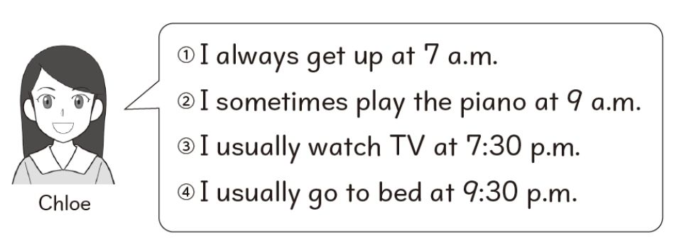
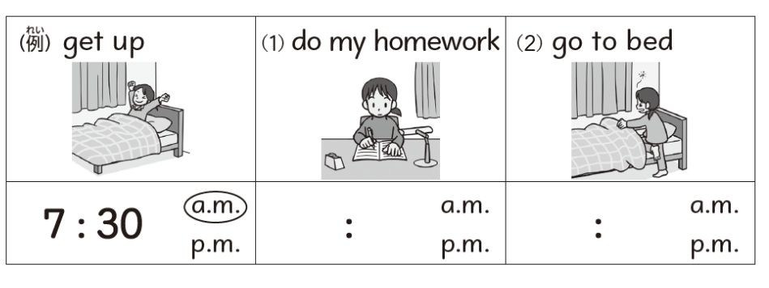
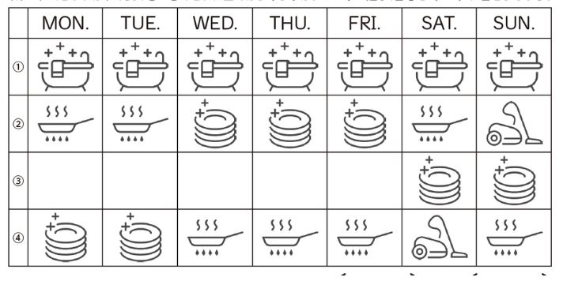
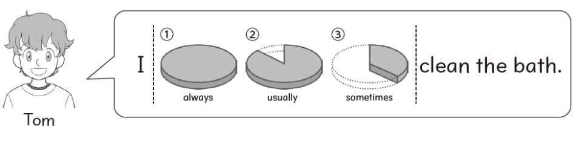
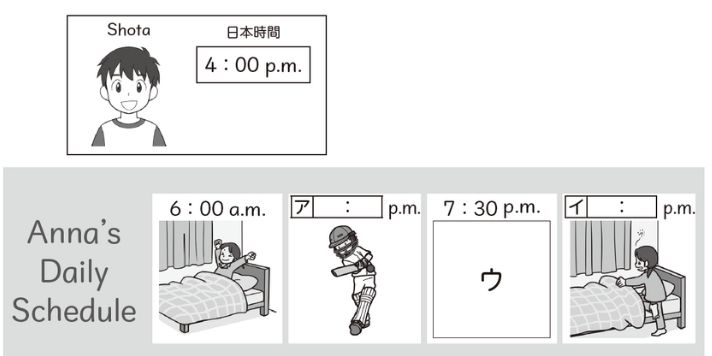
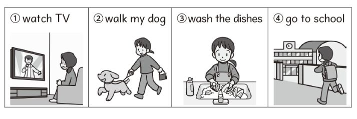

単元末テスト（音声つき）

(1) ①〜④のどれかの文を読んだ音声が流れます。一致するものの番号を選びましょう。
(2) 次の(A)(B)について、クロエは何と言っているでしょうか。もっともふさわしいものを選びましょう。
(A) play the piano at 9 a.m.
(B) go to bed at 9:30 p.m.
例にならって、3つの文を英語で書いてみましょう。（自己採点です）
(1) 例) I always get up at 6 a.m.
(2) 例) I usually play basketball at 3 p.m.
(3) 例) I sometimes watch TV at 8 p.m.

(例) get up：7:30 a.m.（最初から書かれています）
(1) do my homework
(2) go to bed
下の表の①〜④は、それぞれ曜日ごとの家事の担当を表しています。

(1) トムとサラは、上の表の①〜④のどれに当てはまりますか。1つずつ選びましょう。
トム
サラ
(2) トムはお風呂そうじをどれくらいの頻度でしますか。

アンナの日常生活について、「Anna's Daily Schedule」カードを完成させましょう。

(a) アとイに入る時刻を書きましょう（すべて p.m. です）
ア
イ
(b) ウの空所に当てはまるものを1つ選びましょう

(2) アンナの日常生活についてもっとよく知るために、あなたはやり取りの最後に質問をします。①〜③の音声が読み上げられるので、質問としてもっともふさわしいものを選びましょう。（音声のみで、文字はありません）